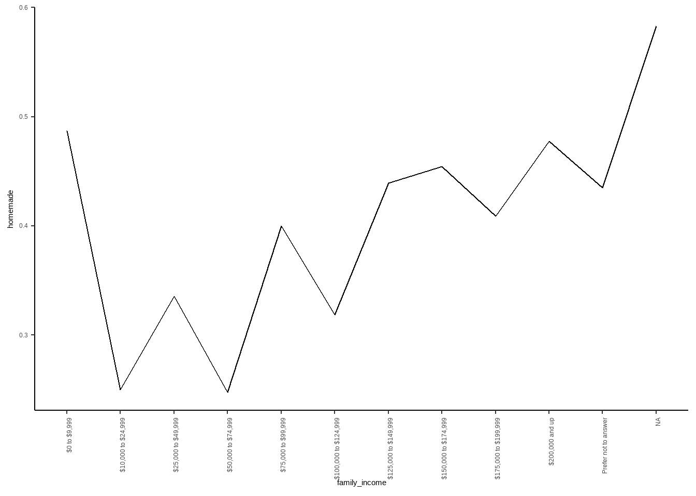
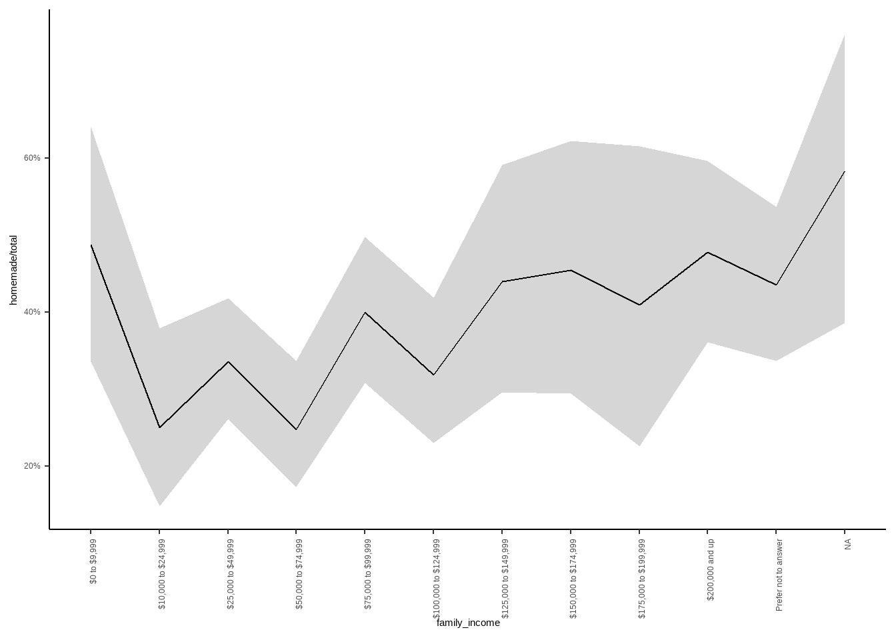
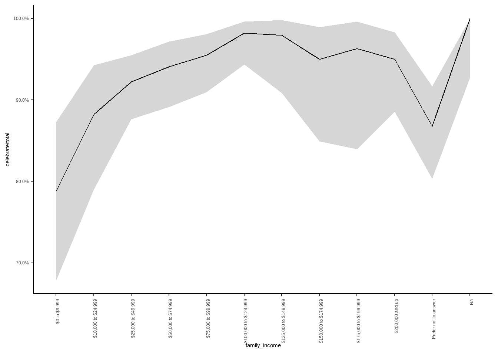
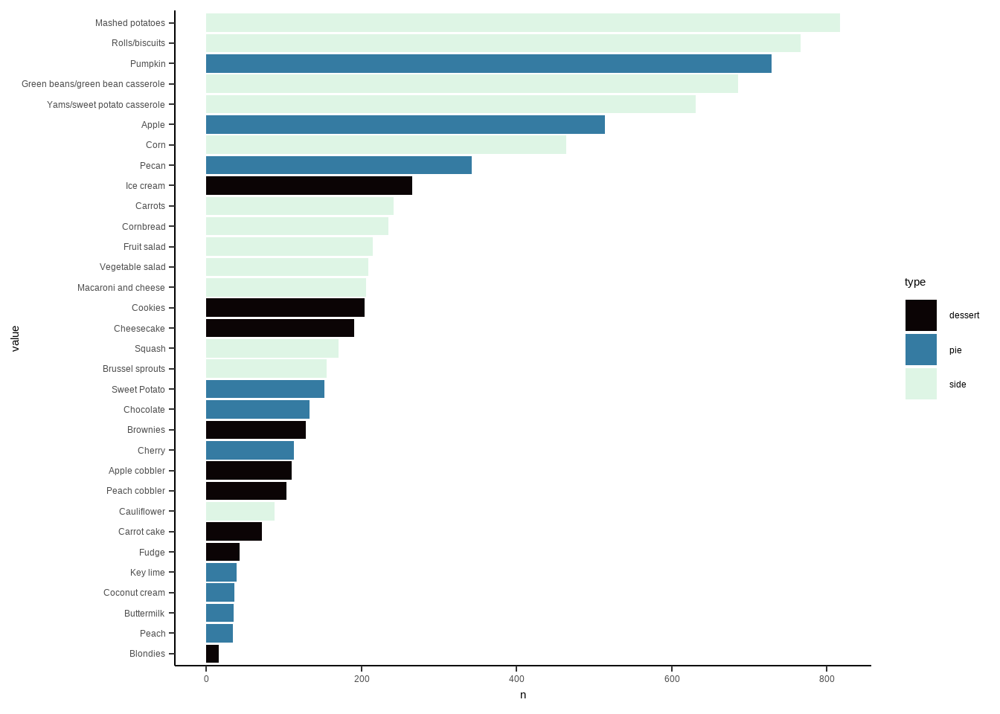
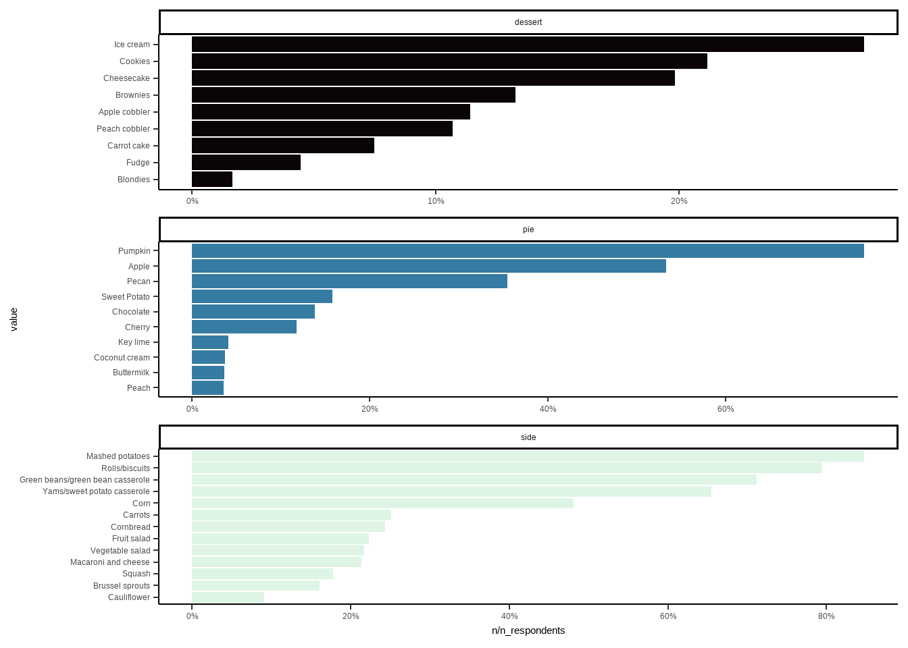
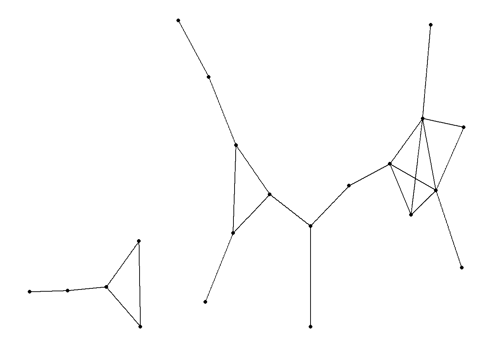

Tidy_Tuesday_Thanksgiving
Andrew Borozan
2022-03-17
This “Just Following Along” will track me following along to David Robinson’s Tidy Tuesday for October 23, 2018. “Just Following Alongs” are simply that: me following someone else’s workflow. The purpose is to learn from professionals; how they process and clean data, what visualizations they use, what packages they employ, what statistical methods they frequently apply, so on and so forth. I am not teaching in these “Just Follow Alongs” - I am simply following along and learning tricks of the trade. Think of these as me “showing my notes” after listening to a teacher’s lecture. I add some flourishes here and there (I like making the graphs look more appealing), but most of the code comes from the tutorial.
I am the apprentice at the feet of the masters…
Here is video of David Robinson dissecting the Tidy Tuesday data:
First, I load in a bunch of packages, just in case…
library(pacman)
p_load(tidyverse, skimr, scales, rmarkdown, magrittr, lubridate, janitor, htmltab, ggrepel, viridis,
ggthemes, knitr, rvest, reactable, RSelenium, stringr.plus, htmltools)
options(scipen=999)Then we load in the data…
thanks <- read_csv("https://raw.githubusercontent.com/rfordatascience/tidytuesday/master/data/2018/2018-11-20/thanksgiving_meals.csv")
view(thanks)thanks %>% count(celebrate)## # A tibble: 2 x 2
## celebrate n
## <chr> <int>
## 1 No 78
## 2 Yes 980# Breakdown of respondents by age and gender
thanks %>% ggplot(aes(age, fill = gender)) +
geom_bar()
# Do people pray?
thanks %>% count(prayer)## # A tibble: 3 x 2
## prayer n
## <chr> <int>
## 1 No 335
## 2 Yes 624
## 3 <NA> 99# Work on black friday?
thanks %>% count(black_friday)## # A tibble: 3 x 2
## black_friday n
## <chr> <int>
## 1 No 727
## 2 Yes 224
## 3 <NA> 107# Community type?
thanks %>% count(community_type)## # A tibble: 4 x 2
## community_type n
## <chr> <int>
## 1 Rural 216
## 2 Suburban 496
## 3 Urban 236
## 4 <NA> 110# Main dish?
thanks %>% count(main_dish, sort = TRUE)## # A tibble: 9 x 2
## main_dish n
## <chr> <int>
## 1 Turkey 859
## 2 <NA> 84
## 3 Other (please specify) 35
## 4 Ham/Pork 29
## 5 Tofurkey 20
## 6 Chicken 12
## 7 Roast beef 11
## 8 I don't know 5
## 9 Turducken 3# How prepared?
thanks %>% count(main_dish, main_prep, sort = TRUE)## # A tibble: 31 x 3
## main_dish main_prep n
## <chr> <chr> <int>
## 1 Turkey Baked 422
## 2 Turkey Roasted 351
## 3 <NA> <NA> 84
## 4 Turkey Fried 41
## 5 Turkey Other (please specify) 34
## 6 Ham/Pork Baked 22
## 7 Other (please specify) Baked 16
## 8 Tofurkey Baked 14
## 9 Other (please specify) Other (please specify) 12
## 10 Turkey I don't know 11
## # ... with 21 more rows# Cranberry?
thanks %>% count(cranberry)## # A tibble: 5 x 2
## cranberry n
## <chr> <int>
## 1 Canned 502
## 2 Homemade 301
## 3 None 146
## 4 Other (please specify) 25
## 5 <NA> 84# Family income?
thanks %>% count(family_income)## # A tibble: 12 x 2
## family_income n
## <chr> <int>
## 1 $0 to $9,999 66
## 2 $10,000 to $24,999 68
## 3 $100,000 to $124,999 111
## 4 $125,000 to $149,999 49
## 5 $150,000 to $174,999 40
## 6 $175,000 to $199,999 27
## 7 $200,000 and up 80
## 8 $25,000 to $49,999 180
## 9 $50,000 to $74,999 135
## 10 $75,000 to $99,999 133
## 11 Prefer not to answer 136
## 12 <NA> 33# The last one needs to be an ordered factor
thanks %>%
mutate(family_income = fct_reorder(family_income, parse_number(family_income))) %>% count(family_income)## Warning: 136 parsing failures.
## row col expected actual
## 8 -- a number Prefer not to answer
## 29 -- a number Prefer not to answer
## 32 -- a number Prefer not to answer
## 33 -- a number Prefer not to answer
## 38 -- a number Prefer not to answer
## ... ... ........ ....................
## See problems(...) for more details.## # A tibble: 12 x 2
## family_income n
## <fct> <int>
## 1 $0 to $9,999 66
## 2 $10,000 to $24,999 68
## 3 $25,000 to $49,999 180
## 4 $50,000 to $74,999 135
## 5 $75,000 to $99,999 133
## 6 $100,000 to $124,999 111
## 7 $125,000 to $149,999 49
## 8 $150,000 to $174,999 40
## 9 $175,000 to $199,999 27
## 10 $200,000 and up 80
## 11 Prefer not to answer 136
## 12 <NA> 33# factor reorder by parse_number(family income) - parse_number helpful in ordering numbers (works with $ and ,s) - sorts in the order we want
# Put that cleaning step in data set:
thanks <- thanks %>%
mutate(family_income = fct_reorder(family_income, parse_number(family_income)))## Warning: 136 parsing failures.
## row col expected actual
## 8 -- a number Prefer not to answer
## 29 -- a number Prefer not to answer
## 32 -- a number Prefer not to answer
## 33 -- a number Prefer not to answer
## 38 -- a number Prefer not to answer
## ... ... ........ ....................
## See problems(...) for more details.Which of these fields influence canned or homemade cranberries? Richer the household have more homemade?
thanks %>% group_by(family_income) %>%
filter(cranberry %in% c("Canned", "Homemade")) %>%
group_by(family_income) %>%
summarize(homemade = mean(cranberry == "Homemade"),
size = n()) %>%
ggplot(aes(family_income, homemade, group = 1)) +
geom_line()+
theme(axis.text.x = element_text(angle = 90, hjust = 1))
# Dave's little trick for confidence intervals
thanks %>% group_by(family_income) %>%
filter(cranberry %in% c("Canned", "Homemade")) %>%
group_by(family_income) %>%
summarize(homemade = sum(cranberry == "Homemade"),
total = n(),
low = qbeta(.025, homemade + .5, total - homemade +.5),
high = qbeta(.975, homemade +.5, total - homemade +.5)) %>% #This adds the confidence interval for the mean
ggplot(aes(family_income, homemade / total, group = 1)) +
geom_line()+
geom_ribbon(aes(ymin = low, ymax = high), alpha = .2) +
scale_y_continuous(labels = scales::percent_format())+
theme(axis.text.x = element_text(angle = 90, hjust = 1))
#Jeffery's interval - quantiles of the Beta distribution - Little beyond my understanding. He didn't do regular confidence intervals, he did Jeffery's interval.How many people celebrate Thanksgiving by family income?
# Dave's little trick for confidence intervals
thanks %>% group_by(family_income) %>%
group_by(family_income) %>%
summarize(celebrate = sum(celebrate == "Yes"),
total = n(),
low = qbeta(.025, celebrate + .5, total - celebrate +.5),
high = qbeta(.975, celebrate +.5, total - celebrate +.5)) %>% #This adds the confidence interval for the mean
ggplot(aes(family_income, celebrate / total, group = 1)) +
geom_line()+
geom_ribbon(aes(ymin = low, ymax = high), alpha = .2) +
scale_y_continuous(labels = scales::percent_format())+
theme(axis.text.x = element_text(angle = 90, hjust = 1))
Looking at side dishes. What are the most common sides, pies, and desserts?
thanks %>% select(id,
starts_with("pie"),
starts_with("dessert"),
starts_with("side"))## # A tibble: 1,058 x 41
## id pie1 pie2 pie3 pie4 pie5 pie6 pie7 pie8 pie9 pie10 pie11
## <dbl> <chr> <chr> <chr> <chr> <chr> <chr> <chr> <chr> <chr> <chr> <chr>
## 1 4337954960 Apple <NA> <NA> <NA> <NA> <NA> <NA> <NA> <NA> <NA> <NA>
## 2 4337951949 Apple <NA> <NA> Choc~ <NA> <NA> <NA> <NA> Pump~ <NA> <NA>
## 3 4337935621 Apple <NA> Cher~ <NA> <NA> <NA> Peach Pecan Pump~ Swee~ <NA>
## 4 4337933040 <NA> <NA> <NA> <NA> <NA> <NA> <NA> Pecan Pump~ <NA> <NA>
## 5 4337931983 Apple <NA> <NA> <NA> <NA> <NA> <NA> <NA> Pump~ <NA> <NA>
## 6 4337929779 <NA> <NA> <NA> <NA> <NA> <NA> <NA> <NA> <NA> Swee~ <NA>
## 7 4337924420 Apple <NA> <NA> <NA> <NA> <NA> <NA> <NA> Pump~ <NA> <NA>
## 8 4337916002 <NA> <NA> <NA> Choc~ <NA> <NA> <NA> <NA> <NA> <NA> <NA>
## 9 4337914977 Apple Butte~ <NA> <NA> <NA> <NA> <NA> <NA> Pump~ Swee~ <NA>
## 10 4337899817 <NA> Butte~ <NA> <NA> <NA> <NA> <NA> <NA> Pump~ Swee~ <NA>
## # ... with 1,048 more rows, and 29 more variables: pie12 <chr>, pie13 <chr>,
## # dessert1 <chr>, dessert2 <chr>, dessert3 <chr>, dessert4 <chr>,
## # dessert5 <chr>, dessert6 <chr>, dessert7 <chr>, dessert8 <chr>,
## # dessert9 <chr>, dessert10 <chr>, dessert11 <chr>, dessert12 <chr>,
## # side1 <chr>, side2 <chr>, side3 <chr>, side4 <chr>, side5 <chr>,
## # side6 <chr>, side7 <chr>, side8 <chr>, side9 <chr>, side10 <chr>,
## # side11 <chr>, side12 <chr>, side13 <chr>, side14 <chr>, side15 <chr># To put all in one column use gather
food_gathered <- thanks %>% select(id,
starts_with("pie"),
starts_with("dessert"),
starts_with("side")) %>%
select(-pie13, -side15, -dessert12) %>%
gather(type, value, -id) %>% # What this does is create a new column (type) and the values are the column names (ex. pie1), takes the value of the specified columns (everything but id), and places those values into the "value" column
filter(!is.na(value),
# !value %in% c("None", "Other (please specifiy)")) %>%
!grepl("None", x = value),
!grepl("Other", x = value)) %>% #Either works, I like grepl better
mutate(type = str_remove(type, "\\d+")) #regex removes numbers (ex. removes 1 from pie1)
theme_set(theme_classic())
food_gathered %>% count(type, value, sort = TRUE) %>%
mutate(value = fct_reorder(value, n)) %>%
ggplot(aes(value, n, fill = type)) +
geom_col() +
coord_flip()+
scale_fill_viridis(option = "mako", discrete = TRUE)
n_respondents <- n_distinct(food_gathered$id)
n_respondents## [1] 964# Dave was talking about getting the percentage of people that respond as opposed to raw number here. I was a little confused as to why he wants to count only the distinct responses....
food_gathered %>% count(type, value, sort = TRUE) %>%
mutate(value = fct_reorder(value, n)) %>%
ggplot(aes(value, n/n_respondents, fill = type)) +
geom_col(show.legend = FALSE) +
coord_flip()+
scale_fill_viridis(option = "mako", discrete = TRUE)+
scale_y_continuous(labels = scales::percent_format())+
facet_wrap(~ type, scale = "free", ncol = 1)
How does taste/servings look by age?
food_gathered %>% inner_join(thanks, by = "id") %>%
mutate(age_number = parse_number(age)) %>% #Gets age floors as number
group_by(value) %>%
summarize(average_age = mean(age_number, na.rm = TRUE),
total = n()) %>%
arrange(desc(average_age))## # A tibble: 32 x 3
## value average_age total
## <chr> <dbl> <int>
## 1 Fruit salad 41.3 215
## 2 Yams/sweet potato casserole 41.2 631
## 3 Coconut cream 41.1 36
## 4 Squash 40.5 171
## 5 Vegetable salad 40.4 209
## 6 Pecan 39.9 342
## 7 Apple 39.8 514
## 8 Mashed potatoes 39.8 817
## 9 Pumpkin 39.7 729
## 10 Green beans/green bean casserole 39.6 686
## # ... with 22 more rowsDoes region influence type of food served?
food_by_region <- food_gathered %>% inner_join(thanks, by = "id") %>%
group_by(us_region) %>%
mutate(respondents = n_distinct(id)) %>%
count(us_region, respondents, type, value) %>%
ungroup() %>%
mutate(percent = n/respondents)
food_by_region %>% filter(value == "Apple") %>%
arrange(desc(percent))## # A tibble: 10 x 6
## us_region respondents type value n percent
## <chr> <int> <chr> <chr> <int> <dbl>
## 1 New England 55 pie Apple 41 0.745
## 2 Middle Atlantic 145 pie Apple 106 0.731
## 3 Pacific 130 pie Apple 74 0.569
## 4 West North Central 71 pie Apple 37 0.521
## 5 East North Central 145 pie Apple 75 0.517
## 6 South Atlantic 203 pie Apple 101 0.498
## 7 Mountain 41 pie Apple 19 0.463
## 8 West South Central 85 pie Apple 32 0.376
## 9 East South Central 56 pie Apple 19 0.339
## 10 <NA> 33 pie Apple 10 0.303food_by_region %>% filter(value == "Pumpkin") %>%
arrange(desc(percent))## # A tibble: 10 x 6
## us_region respondents type value n percent
## <chr> <int> <chr> <chr> <int> <dbl>
## 1 New England 55 pie Pumpkin 46 0.836
## 2 Mountain 41 pie Pumpkin 34 0.829
## 3 Pacific 130 pie Pumpkin 105 0.808
## 4 West North Central 71 pie Pumpkin 57 0.803
## 5 West South Central 85 pie Pumpkin 68 0.8
## 6 Middle Atlantic 145 pie Pumpkin 115 0.793
## 7 East North Central 145 pie Pumpkin 113 0.779
## 8 East South Central 56 pie Pumpkin 38 0.679
## 9 South Atlantic 203 pie Pumpkin 135 0.665
## 10 <NA> 33 pie Pumpkin 18 0.545food_by_region %>% filter(value == "Pecan") %>%
arrange(desc(percent))## # A tibble: 10 x 6
## us_region respondents type value n percent
## <chr> <int> <chr> <chr> <int> <dbl>
## 1 West South Central 85 pie Pecan 53 0.624
## 2 East South Central 56 pie Pecan 34 0.607
## 3 Mountain 41 pie Pecan 20 0.488
## 4 South Atlantic 203 pie Pecan 78 0.384
## 5 East North Central 145 pie Pecan 47 0.324
## 6 New England 55 pie Pecan 17 0.309
## 7 Pacific 130 pie Pecan 37 0.285
## 8 West North Central 71 pie Pecan 19 0.268
## 9 Middle Atlantic 145 pie Pecan 31 0.214
## 10 <NA> 33 pie Pecan 6 0.182food_by_region %>% filter(value == "Cornbread") %>%
arrange(desc(percent))## # A tibble: 10 x 6
## us_region respondents type value n percent
## <chr> <int> <chr> <chr> <int> <dbl>
## 1 West South Central 85 side Cornbread 34 0.4
## 2 East South Central 56 side Cornbread 16 0.286
## 3 Pacific 130 side Cornbread 37 0.285
## 4 South Atlantic 203 side Cornbread 53 0.261
## 5 Mountain 41 side Cornbread 10 0.244
## 6 Middle Atlantic 145 side Cornbread 33 0.228
## 7 <NA> 33 side Cornbread 7 0.212
## 8 New England 55 side Cornbread 10 0.182
## 9 West North Central 71 side Cornbread 12 0.169
## 10 East North Central 145 side Cornbread 23 0.159Types of food by prayer
food_gathered %>% inner_join(thanks, by = "id") %>%
filter(!is.na(prayer)) %>%
group_by(type, value) %>%
summarize(prayer = sum(prayer == "Yes"), total = n(),
percent = prayer/total) %>%
arrange(desc(percent))## `summarise()` has grouped output by 'type'. You can override using the
## `.groups` argument.## # A tibble: 32 x 5
## # Groups: type [3]
## type value prayer total percent
## <chr> <chr> <int> <int> <dbl>
## 1 pie Coconut cream 29 35 0.829
## 2 side Macaroni and cheese 169 205 0.824
## 3 pie Sweet Potato 121 151 0.801
## 4 dessert Peach cobbler 81 102 0.794
## 5 side Fruit salad 169 214 0.790
## 6 pie Cherry 86 112 0.768
## 7 dessert Cheesecake 142 189 0.751
## 8 dessert Carrot cake 54 72 0.75
## 9 pie Buttermilk 25 34 0.735
## 10 dessert Fudge 31 43 0.721
## # ... with 22 more rowsWhat sides, pies, and desserts are eaten together?
food_gathered## # A tibble: 8,145 x 3
## id type value
## <dbl> <chr> <chr>
## 1 4337954960 pie Apple
## 2 4337951949 pie Apple
## 3 4337935621 pie Apple
## 4 4337931983 pie Apple
## 5 4337924420 pie Apple
## 6 4337914977 pie Apple
## 7 4337893416 pie Apple
## 8 4337878450 pie Apple
## 9 4337844879 pie Apple
## 10 4337823612 pie Apple
## # ... with 8,135 more rowslibrary(widyr)## Warning: package 'widyr' was built under R version 4.1.3food_gathered %>% pairwise_cor(value, id, sort = TRUE) %>%
filter(item1 == "Pecan")## # A tibble: 31 x 3
## item1 item2 correlation
## <chr> <chr> <dbl>
## 1 Pecan Yams/sweet potato casserole 0.169
## 2 Pecan Green beans/green bean casserole 0.142
## 3 Pecan Fruit salad 0.139
## 4 Pecan Macaroni and cheese 0.132
## 5 Pecan Rolls/biscuits 0.130
## 6 Pecan Peach cobbler 0.130
## 7 Pecan Sweet Potato 0.113
## 8 Pecan Key lime 0.101
## 9 Pecan Chocolate 0.0994
## 10 Pecan Cornbread 0.0991
## # ... with 21 more rowslibrary(ggraph)## Warning: package 'ggraph' was built under R version 4.1.3library(igraph)## Warning: package 'igraph' was built under R version 4.1.3##
## Attaching package: 'igraph'## The following object is masked from 'package:plotly':
##
## groups## The following objects are masked from 'package:lubridate':
##
## %--%, union## The following objects are masked from 'package:dplyr':
##
## as_data_frame, groups, union## The following objects are masked from 'package:purrr':
##
## compose, simplify## The following object is masked from 'package:tidyr':
##
## crossing## The following object is masked from 'package:tibble':
##
## as_data_frame## The following objects are masked from 'package:stats':
##
## decompose, spectrum## The following object is masked from 'package:base':
##
## unionfood_cor <- food_gathered %>% pairwise_cor(value, id, sort = TRUE) %>%
head(50)
food_cor %>% graph_from_data_frame() %>%
ggraph() +
geom_edge_link()+
geom_node_point()## Using `stress` as default layout
#Following along but got lost in the graphs. Graphs not easy to interpret